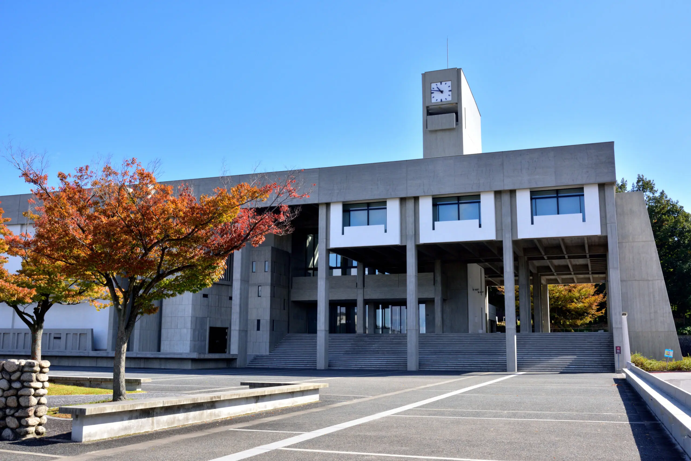

名古屋大学
中部地方の名門大学

名古屋市にある旧帝国大学の一つ。国立大学で国内学力ランキング一桁であるが故に、東海地方から数多くの優れた人材を輩出している。しかしながら、東京大学と大阪大学・京都大学に板挟みされた立地なので知名度は低く、関東圏では明治大学の通称「明大(めいだい)」と「名大」を混同してしまい名大生を悩ませている。
(画像引用元)
進学した時の注意点を名大生目線で説明すると、医学部以外が通うことになる東山キャンパスは立地がとにかく広い。横幅が東京ドーム3個分ぐらい(体感値)とイメージすると伝わるだろう。授業に遅刻しないために自転車を使うのも手だ。
一人暮らしをするなら電動自転車を購入するべきだ。名古屋大学周辺は坂道がとにかく多く、普通の自転車を使うもんなら登校時に体力を消耗してしまい一限目に疲労困憊になる。自分みたいにケチって後悔しないように、数万円値が張るが我慢して電動自転車を買おう。
アクセス方法
東山キャンパス
- 地下鉄名城線名古屋大学駅下車すぐ
鶴舞キャンパス
- JR中央本線鶴舞駅・地下鉄鶴舞線鶴舞駅下車 徒歩5分
大幸キャンパス
- 地下鉄名城線ナゴヤドーム前矢田駅下車 徒歩5分
大学の情報